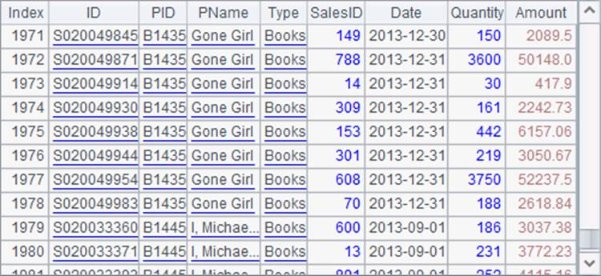
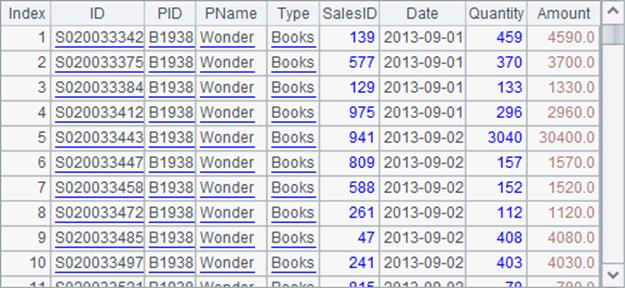

7.7.3 Accessing big text files with the cursor
A more convenient tool to process text files containing a large amount of data is the cursor. Cursor functions are ready to be called after the external file cursor is generated based on a text file. For example:
|
|
A |
|
1 |
=file("PersonnelInfo.txt") |
|
2 |
=A1.cursor@t(ID,Name,Gender,State) |
|
3 |
>A2.skip(10000) |
|
4 |
=A2.fetch(1000) |
|
5 |
=A2.fetch(1000) |
|
6 |
>A2.close() |
A2 creates a file cursor using cursor function, in which @t option is used to import the file¡¯s first row as the column names. A3 skips the first 10,000 rows. A4 and A5 respectively fetch 1,000 rows from A2¡¯s cursor:


Data can be fetched conveniently and quickly by the position from the cursor. As with f.import() in section one, certain fields can be retrieved for creating the cursor and data type can be specified for a certain field with f.cursor().
With the external file cursor, various operations can be easily handled. About its uses, refer to Basic Uses of Cursor and other documents on esProc external memory computations.
Also through the cursor, data can be exported to a file. For example:
|
|
A |
|
1 |
=file("employee2.txt") |
|
2 |
=demo.cursor("select * from EMPLOYEE") |
|
3 |
>A1.export@t(A2,EID,NAME+" "+SURNAME:FullName,GENDER,STATE) |
A2 creates a database cursor. A3 gets the expected result by computing the cursor data and then export it to a file. After the code is executed, employee2.txt holds data as follows:

Exporting data through the cursor is convenient and the code is concise. To retain the existing data during the data export, use @a option to append each batch of data export to the previous data.
esProc also supports accessing bin files with the cursor. Bin files take up less memory space and enable more efficient computations. More details about bin files can be found in Bin Files.